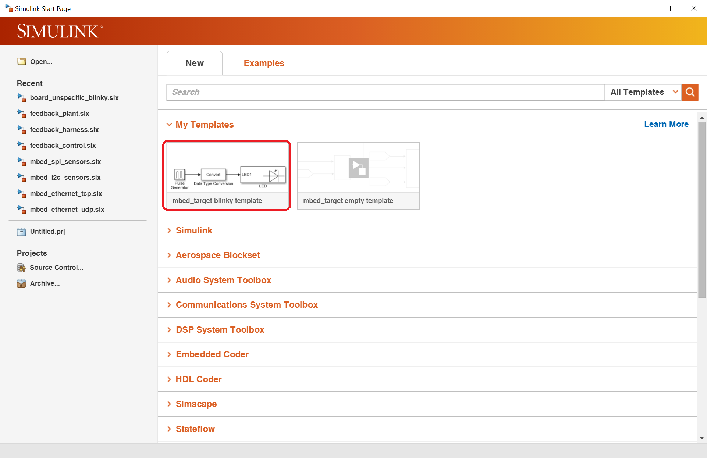
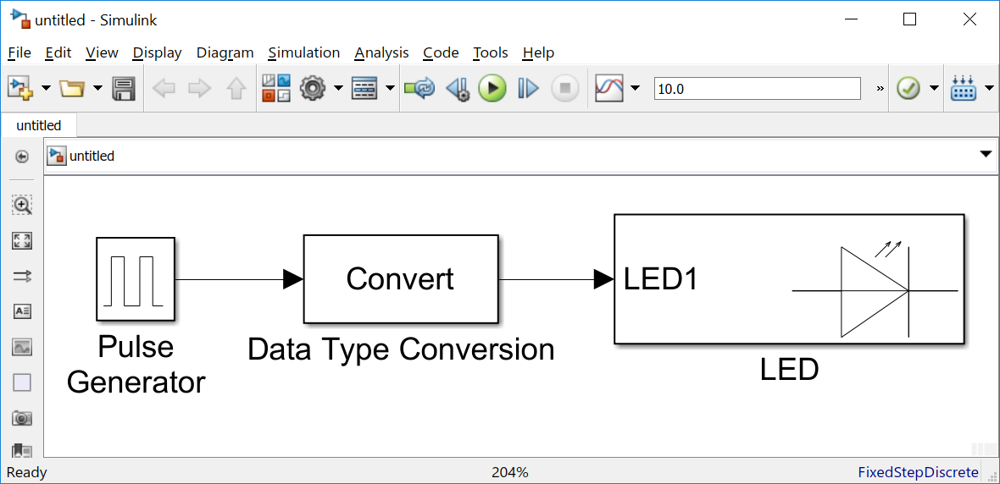
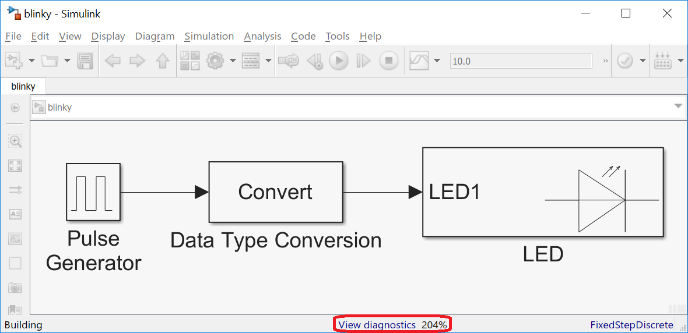

3.1. Variant 1
Create a new blinky model with all necessary option already set from the template list:
>> open_system(new_system('untitled','FromTemplate','mbed_target_template_blinky'))
or out of the Simulink start page:
{kind=link}
resulting in a new model:
{kind=link}
This model must be saved before starting the code generation.
The correct mbed target installation can be checked with the integrated target detection. Please open the model configuration and go to Mbed options. After pressing the button detect mbed target (mbedls) the connected board should be shown in the line above the detect button:

When the connected board does not appear, please check the output of mbedls at the windows commandline. It should look like:
E:\git\mbed_target\doc>mbedls
+---------------+----------------------+-------------+-------------+--------------------------+-----------------+
| platform_name | platform_name_unique | mount_point | serial_port | target_id | daplink_version |
+---------------+----------------------+-------------+-------------+--------------------------+-----------------+
| NUCLEO_F767ZI | NUCLEO_F767ZI[0] | D: | COM4 | 08180221053160053A75F920 | 0221 |
+---------------+----------------------+-------------+-------------+--------------------------+-----------------+
When it does not look like the above example please check your mbed target documentation.
When the board could be detected, the code generation can be started by
- pressing the button Build model,
- using the keyboard shortcut Ctrl+B or
- choosing the menu item Code / C/C++ Code / Build Model.
{kind=link}
After a short processing time, the diagnostic viewer can be opened:
{kind=link}
The diagnostic viewer shows the complete code generation process in detail.
- The first section shows the mbed target details
{kind=link}
- The next parts contain the MATLAB code generation information
- and the output of the mbed Python tool generating a Makefile
{kind=link}
- In the next step the mbed library and the generated C++ code is compiled. When the Simulink model is build the first time, this process can take a while.
{kind=link}
- Finally, after a successful build, the sizes of the different sections (e.g. text - instruction code, data+bss - data memory) should be displayed. In one of the last lines the result of the flashing can be seen. For an mbed board it is just a copy command.
{kind=link}